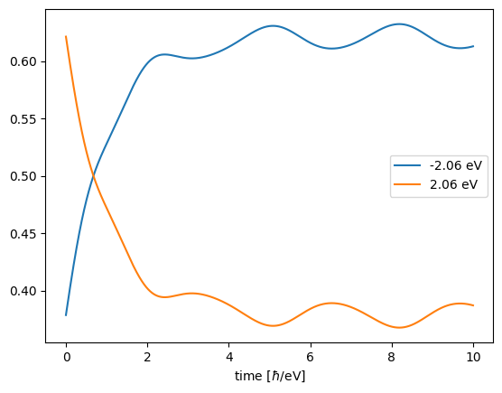

Rabi Oscillations in TLS
We study Rabi oscillations in isolated two-level system.
NOTE: this tutorial makes heavy use of the liberal way GRANAD lets you group orbitals. You might want to consult the tutorial on orbital lists first.
Building a two-level system
Consider an isolated atom, modelled as a two-level system. Each level is an orbital, so let's combine them in a list.
from granad import Orbital, OrbitalList
lower_level = Orbital(tag="atom")
upper_level = Orbital(tag="atom")
atom = OrbitalList([lower_level, upper_level])
We have used a tag to signify that these the orbitals belong to the same atom. Let's see what we have done.
List with 2 orbitals, 2 electrons.
[0] electrons excited from [0] to [0].
group id 1 : 1 orbitals
group id 2 : 1 orbitals
We see that GRANAD assumes that every orbital is filled. But we want only the one of the levels filled. So, we set the electron number to 1.
List with 2 orbitals, 1 electrons.
[0] electrons excited from [0] to [0].
group id 1 : 1 orbitals
group id 2 : 1 orbitals
We now need to specify the Hamiltonian. We can do so by setting the elements corresponding to the orbitals.
atom.set_hamiltonian_element(upper_level, lower_level, 2.0)
atom.set_hamiltonian_element(upper_level, upper_level, 0.5)
atom.set_hamiltonian_element(lower_level, lower_level, -0.5)
print(atom)
print(atom.hamiltonian)
List with 2 orbitals, 1 electrons.
[0] electrons excited from [0] to [0].
group id 1 : 1 orbitals
group id 2 : 1 orbitals
[[-0.5+0.j 2. +0.j]
[ 2. +0.j 0.5+0.j]]
Setting dipole transitions is similar. We want the lower and upper level to be connected by a dipole transition in z-direction.
List with 2 orbitals, 1 electrons.
[0] electrons excited from [0] to [0].
group id 1 : 1 orbitals
group id 2 : 1 orbitals
We set the initial excited state (in our point of view, this is a HOMO-LUMO transition).
List with 2 orbitals, 1 electrons.
[1] electrons excited from [0] to [1].
group id 1 : 1 orbitals
group id 2 : 1 orbitals
We consider a continuous wave as an external illumination.
We propagate the system in time.
time, density_matrices = atom.get_density_matrix_time_domain(
end_time=10, relaxation_rate=1, illumination=wave, use_rwa=True
)
atom.show_time_dependence(density_matrices, time=time)
